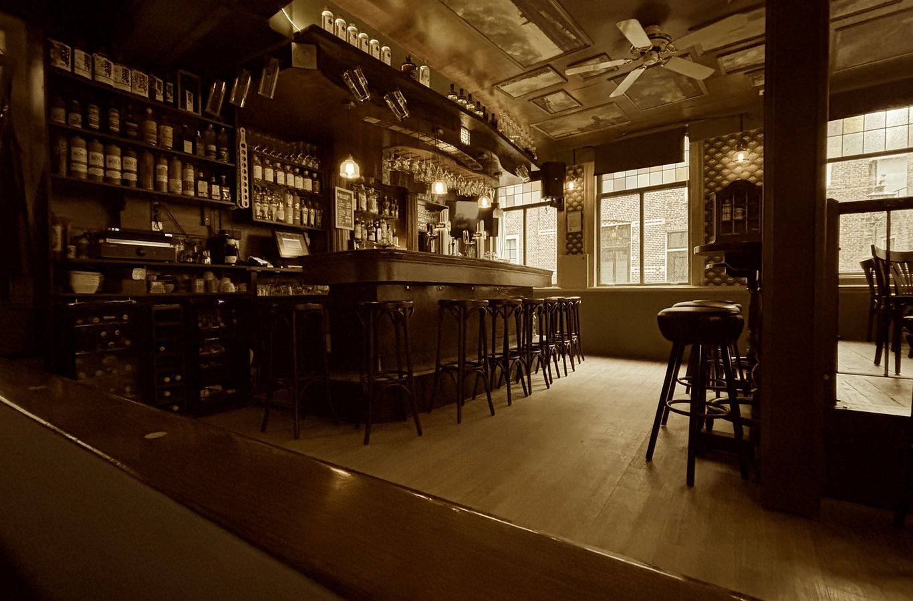
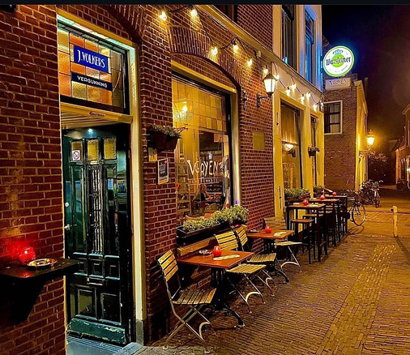
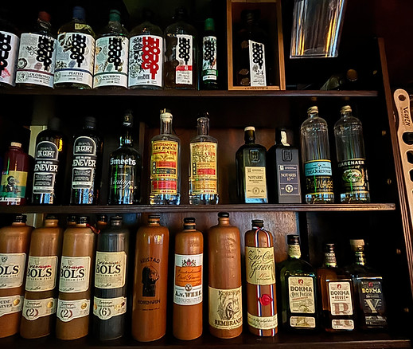
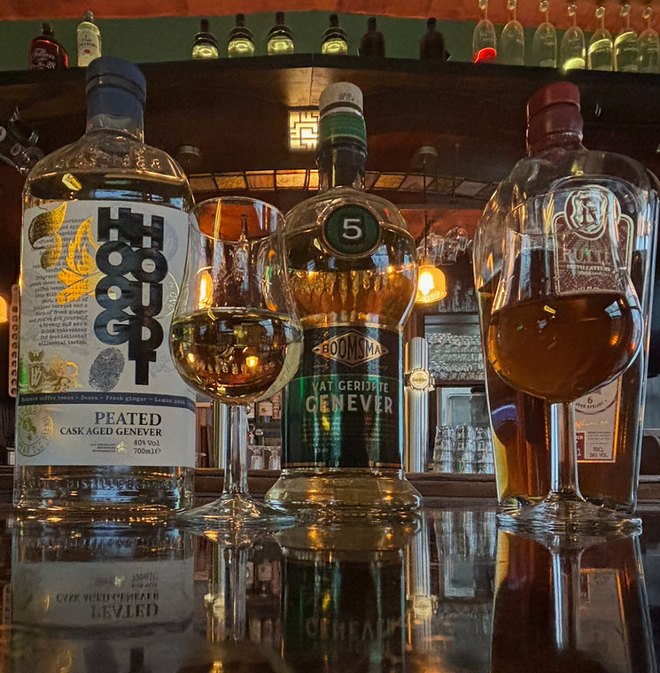
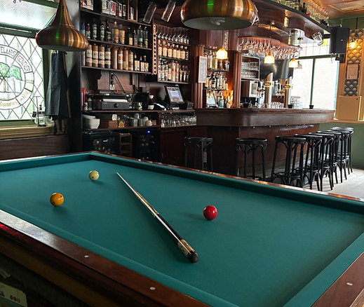

Schoolsteeg 4, Leiden
Waar ambacht en gezelligheid elkaar ontmoeten
Midden in het bruisende hart van Leiden werken we aan een ware jenever revival. Met ruim 80 verschillende jenevers maken we dit oer-Hollandse drankje weer hip.
- Het oudste nog bestaande café van Leiden
- Het voormalige woonhuis van meesterschilder Jan van Goyen
- Het laatste biljart binnen de Leidse Singels
De huiskamer van Leiden
Onze knusse huiskamersfeer zorgt ervoor dat iedereen zich meteen thuis voelt. Kom langs voor een ontspannen avond met live muziek, toffe evenementen en unieke proeverijen.
Ook als je geen jenever drinkt, hebben we genoeg te bieden. Denk aan lekkere speciaalbiertjes, spannende cocktails, een frisje of een goed glas wijn.
Van pure ambacht tot hippe cocktail
Jenever is niet zomaar het borreltje dat opa dronk op zondagmiddag. Bij ons proef je hoe veelzijdig het is: puur, gemixt, klassiek of vernieuwend. We brengen de geschiedenis tot leven, maar dan in een modern jasje. Proost op traditie en innovatie, allemaal in één glas.

De jeneverkaart
Van jonge klare tot vatgerijpte meesterwerken van Nederlandse en Belgische stokers. Klik op een jenever voor het verhaal erachter.

Niets gevonden. Vraag het gerust aan de bar: we hebben er nog meer staan.
En meer: achter de bar staat nog veel meer. Vraag ernaar.

Proeverijen
Dompel je onder in de geschiedenis en smaken van de fijnste jenevers. Of je nu een doorgewinterde liefhebber bent of voor het eerst kennismaakt: je krijgt uitleg over de geschiedenis en hoe deze oer-Hollandse trots gemaakt wordt. Bij de vatgerijpte jenevers proef je wat de rijping op verschillende vaten met de smaak doet.
- Met een knipoog naar LeidenProeverij van 3 "Leidsche Jenevers"€ 17,50
- Drie klassiekers, één avontuurProeverij van 3 jenevers€ 19,50
- Drie vaten, drie smakenProeverij van 3 vatgerijpte jenevers€ 19,50
- Het quintet van jeneverProeverij van 5 jenevers€ 31,00
- Vijfmaal verfijningProeverij van 5 barrel aged meesterwerken€ 35,00
Te boeken vanaf 4 personen. Prijs is per persoon.
Cocktailworkshops
Leer onder begeleiding van onze bartenders zelf de lekkerste jenevercocktails maken. Perfect voor een middagje uit met vrienden, een teamuitje of gewoon omdat je iets nieuws wilt ontdekken. Proef, shake en beleef.
Boek een proeverijBedrijfsuitje of groepsactiviteit
Op zoek naar een bijzonder bedrijfsuitje, teamuitje of originele groepsactiviteit in historisch Leiden? In het voormalige woonhuis van Jan van Goyen nemen we jullie mee op een smaakvolle reis door de geschiedenis van een van de bekendste traditionele sterke dranken van Nederland.
Tijdens de begeleide proeverij maken jullie kennis met vijf verschillende jenevers, van traditioneel jong en oud tot bijzondere varianten. De begeleider vertelt over de geschiedenis, het productieproces en de stijlen, maar vooral ga je zelf proeven, ruiken en ontdekken. Iedereen krijgt een persoonlijk proefformulier, en ondertussen serveren we borrelhapjes.
Internationale collega's? Jenever, ook bekend als Dutch genever, is de historische voorloper van gin. De proeverij kan volledig in het Engels.
Combineer het gerust met een stadswandeling, rondvaart, diner in de binnenstad of een aansluitende borrel bij ons. We denken graag mee.
- Prijs
- € 42,50 per persoon, inclusief 5 jenevers, uitleg, borrelhapjes en proefformulier
- Groep
- minimaal 8, maximaal 40 personen
- Duur
- circa 75 minuten
- Aanvang
- dagelijks tussen 12:00 en 20:00 uur, op aanvraag
- Reserveren
- minimaal 72 uur van tevoren (korter in overleg, op basis van beschikbaarheid)
Agenda
Klaverjassen, quizzen, live muziek en een feestelijke decembermaand. Tickets bestel je online.
-
Tickets
Koppel klaverjassen
Zondag, inloop 13:30, start 14:00 – € 10 per koppel
Iedere laatste zondag van de maand. Drie partijen, een dagklassement voor koppels en een algemeen klassement over het hele jaar. Het inschrijfgeld gaat naar een borrelhapje en een mooie prijs.
-
Tickets
Pubquiz
20:00 tot middernacht – ticket per team, max. 4 personen
Ben jij een wandelende encyclopedie of gewoon goed in gokken? Verzamel je team voor een quiz vol verrassende vragen en humor.
-
Tickets
Kerst Swingo
20:00
Geen gewone bingo, maar een muzikale kerstspecial vol meezingers, gezelligheid en natuurlijk prijzen.
-
Live muziek: De Droomdenkers, Top 2000-editie
20:00
Een avond vol livemuziek met de grootste hits uit de Top 2000. Zing, dans en proost mee.
-
Tickets
Eindejaars Quiz
20:00
Weet jij nog wat er in 2026 allemaal gebeurd is? Acht rondes speelplezier, en wij regelen een borrelhap tussendoor.
-
Tickets
Oliebollenwedstrijd, tweede editie
20:00
Wie bakt de lekkerste oliebol van Leiden? Een deskundige jury én het publiek kiezen hun favoriet. De winnaar gaat naar huis met een fust van 20 liter bier.
-
Tickets
Aftellen bij Van Goyen
21:00 tot 02:00
Vier oud en nieuw met de hele avond onbeperkt bier, wijn, fris en luxe bites. Zing en dans mee, proost om middernacht met bubbels en knal samen met ons 2027 in.
Biljartplezier voor jong en oud
Van Goyen is het laatste café binnen de Leidse Singels met een biljarttafel. We spelen hier wekelijks met onze twee teams in de regionale competitie, maar de tafel is ook te reserveren voor iedereen die een stootje wil wagen.
€ 7,50 per uur
Reserveer de biljarttafel
Cadeaubon
Op zoek naar het perfecte cadeau? Geef een cadeaubon van Van Goyen Jeneverhuis, voor jenevers, drankjes en hapjes.
- € 10
- € 25
- € 50
- € 100
- ander bedrag
Nieuws & weetjes
Veelgestelde vragen over jenever, beantwoord.
Kom langs
Schoolsteeg 42311 TD Leiden
071 512 3514
info@jeneverhuis.nl
| Maandag | 19:00 – 01:00 |
|---|---|
| Dinsdag | 17:00 – 01:00 |
| Woensdag | 17:00 – 01:00 |
| Donderdag | 17:00 – 01:00 |
| Vrijdag | 16:00 – 02:00 |
| Zaterdag | 16:00 – 02:00 |
| Zondag | 16:00 – 00:00 |
Werken bij Van Goyen?
Wil je bij ons komen werken? Mail je cv naar info@jeneverhuis.nl.